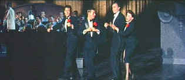

| A
Star is Born (SE)/A,B |
| Warner/1954/176/ANA
2.35 |
A
Star is Born ranks as one of the grand cinema
comebacks. It's a first rate entertainment, produced as a
vehicle for star Judy Garland, and does it ever make the most of
her talents. Four years separate her last film for MGM, Summer
Stock and this Warner Bothers showcase film. Summer Stock,
made hard on the heels of her release from Annie
Get Your Gun, was a struggle at best, and the final
straw was her premature release from Royal
Wedding and MGM. A remake of the 1937 drama starring Janet Gaynor
and Frederic March, the George Cukor directed film is a dramatic
musical, integrating terrific musical numbers as young Esther
Blodgett becomes movie star Vicki Lester. Cukor also directed
What Price Hollywood?, the original 1932 film which was
reworked into A Star is Born, and the director's smooth
handling of his star pays dividends in a fully realized performance.
A classic story of Hollywood, A Star is Born chronicles
the rise of Vicki Lester and the fall of Norman Maine. Maine
discovers Esther at a benefit performance. She saves him from
stage humiliation by some quick thinking with creative dance
steps on stage. Norman convinces her to stay in Hollywood to
pursue a film career and as she is molded into a star, they fall
in love and marry.
Judy is
wonderful in A Star is Born. Her own fragile history as a
temperamental star echoes the behavior of Norman Maine and adds
a layer of pathos beyond the script. George Cukor, famous for his handling
of female stars, gets grand performances from his actors. Cukor
communicates beautifully with Judy and her nuanced performance
must give a special nod to the director. James
Mason, beyond any
reasonable screen evidence, makes Norman Maine a charming drunk.
There are intolerable moments of drunken abuse, but a spark in
Mason's eye reveals a life line to his humanity that goes deeper
than the drunken star persona. Jack Carson does remarkable
work as head of publicity Matt Libby. It's a venomous performance. Even
when Maine abuses Libby early in the film, Libby is a
rattlesnake ready to bite. Charles Bickford* with stentorian voice, commands
respect, and as Oliver Niles, he is one of the most consistent
characters in A Star is Born. Tommy Noonan, on the other
hand, playing Esther's band leader buddy, is rather limp and
uninspired.
The musical numbers are a constant joy.
I love the wan hope of the ballad "It's a New World"
when Vicki serenades Norman. The delightful "Someone
at Last" shows off the incomparable energy of Garland,
transforming her living room to a musical stage. The most famous
musical number is probably the "Born in a Trunk"
montage. This was not directed by Cukor and was a late addition
to the film hoping to capitalize on Judy's charismatic singing
and dancing.
Musically or dramatically, A Star is
Born is a triumph. Filmed with exquisite grace by Cukor,
acted with heart and passion by Garland and Mason, the film is a
grand record of Hollywood.
 |
| Blodgett
props up Maine. ©Warner |
A Star is Born
went through some drastic cuts after its initial road show
release. Most usable film elements have yet to be found, but
sound track recordings exist and have been used in an unusual
attempt to restore the fluidity of the production. The restoration elements are
inconsistent, with some excessive grain on the extant filmed portions.
The stills and dialogue tracks used to fill in the missing
footage integrate well with the
production and add a layers to the film, especially as a
Hollywood backstage story.
The appearance of A Star is Born
on DVD is a treasure. The virtues outweigh the shortcomings.
Overall, the elements are smooth and detailed. There are a number of scenes in which grain shows prominently on
solid light colored fabrics. You might catch a hint of grain on
faces in several scenes. Some very slight edge flicker shows up, but it's
minor. There is one scene in which there's a momentary frame
glitch when Judy sings "Heaven's Door." Color depth is
exquisite, showing off the lush production to best
advantage. A few scenes have color pulsing due to element
deterioration. Blacks are sumptuous with layers of black on
black clearly defined. Saturation of bright solid colors is a
virtual explosion of vitality. Shadow detail is excellent.
Mixed to Dolby Digital 5:1, the music and songs are treated with
elegant clarity. Dialogue is cleanly delivered with occasional
directionality.
Included as special edition elements
are three alternate cuts of "The Man That Got
Away," a short clip from the deleted montage song
"When My Sugar Walks Down the Street," and some
newsreel and television footage surrounding the premiere and
party for the film. Trailers for three versions of A Star is
Born, 1937, 1954, and the Streisand remake of 1976, complete
the package.
*Reader Eric Jacobs sadly pointed
out my mistake in crediting Charles Bickford for the role of the
studio head in Singin' in the Rain, which was played by
Millard Mitchell. Thanks Eric.
|
|

Take a look at the merry images of
America's gift to the movies: Hollywood
Musical Posters are featured from The Movie
Poster Archive.

The
Feature
Archive has articles ranging from Akira
Kurosawa to Blonde
Bimbos and John
Ford.
Puttin
on the Ritz

Fred
Astaire and Cyd Charisse bring Silk Stockings to life, a remake
of Ninotchka, one of many films successfully turned into
musicals by the Hollywood dream factory. Read all about remakes
into musicals by clicking on the divine dancers.

They may be judgmental, but that's the point, isn't it. Lots of
DVD reviews plus news and more.
Click on the link to visit the judge's chambers.
 Brad
Lang continues to add more interesting to the extensive
collection at Classic
Movies. Everything from actors and actress
to your favorite directors is linked at the site. Brad
Lang continues to add more interesting to the extensive
collection at Classic
Movies. Everything from actors and actress
to your favorite directors is linked at the site.

News, information, features about
current films in theaters and in the pipeline. Easy to use
interface.
 
The Big Combo
has style to spare in reviewing films and producing feature
articles. Check out their special "Lingo" section.
 Gary
Morris's insightful publication Bright Lights Film Journal
turns the celluloid in films from a unique perspective. Click on
the image above for more pure movie views. Gary
Morris's insightful publication Bright Lights Film Journal
turns the celluloid in films from a unique perspective. Click on
the image above for more pure movie views.
 Across
the Bridge Posters won't
sell you the Brooklyn Bridge, but have a look at their selection
of movie posters. Across
the Bridge Posters won't
sell you the Brooklyn Bridge, but have a look at their selection
of movie posters.
 Direct
from the corridors of the Home Theater Forum, Home Theater Talk
is the newest place on the Net to discuss everything home
theater. Friendly atmosphere and knowledgeable folks are the
secret ingredients. Direct
from the corridors of the Home Theater Forum, Home Theater Talk
is the newest place on the Net to discuss everything home
theater. Friendly atmosphere and knowledgeable folks are the
secret ingredients.

Captain Blood: Errol Flynn, as the charismatic sea captain, says to his crew
'It's the world against us, and us against the world.'.
Need
a daily fix of movie quotes. Reel Quotes Newsletter has
the answer. Click on the Reel Quotes symbol for more.
|